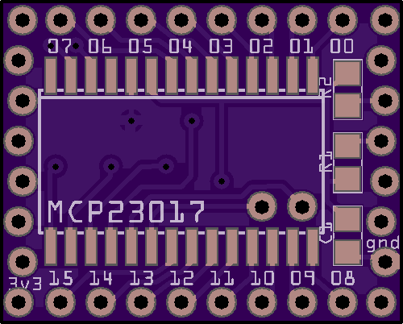
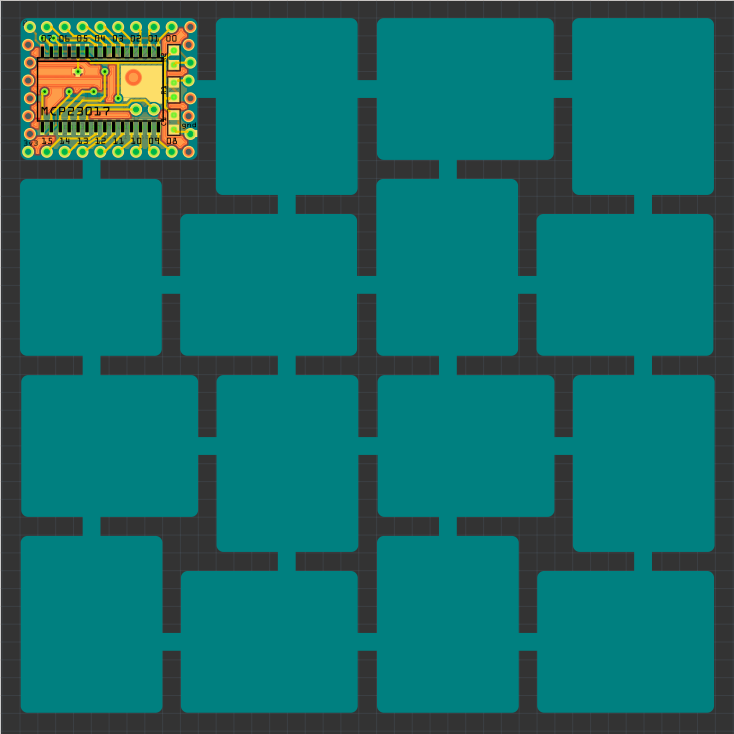

Third Time is the Charm¶
Published on 2019-03-14 in D1 Mini Expander Shield.
I stopped believing that I am somehow competent enough to order the right footprint of the chips, and I decided to simply redesign the PCB to accommodate the bigger chips. When life gives you lemons…
It just barely fits, together with the pullups and a filter cap. I had to move the address jumpers to the bottom, though:

Now working on fitting as many as I can on a 10x10cm board:
